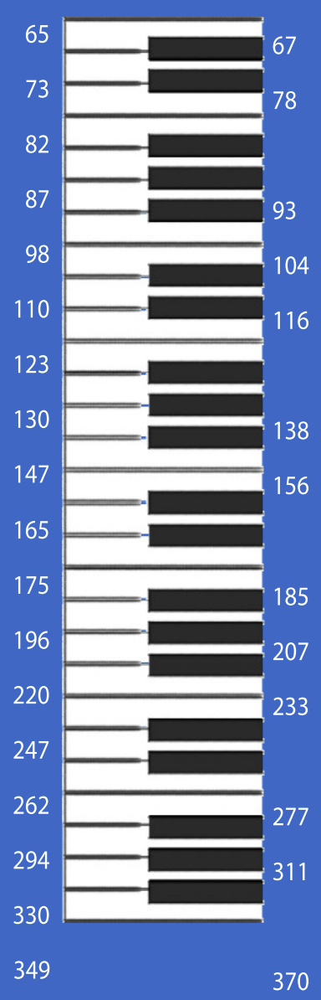
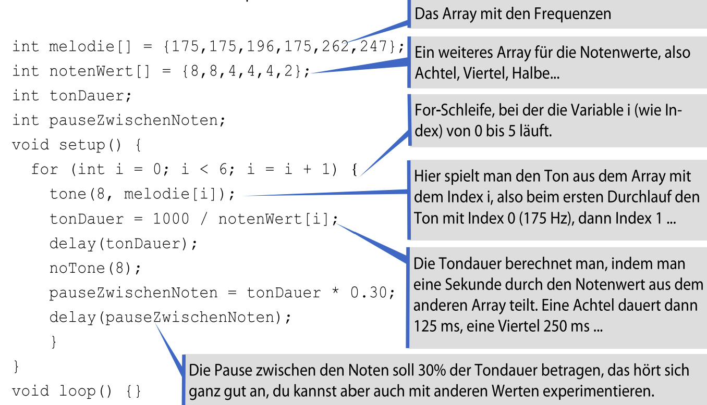
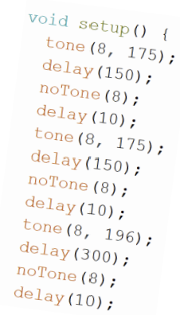
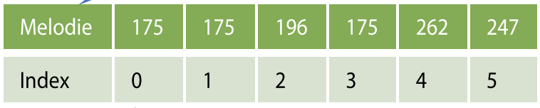
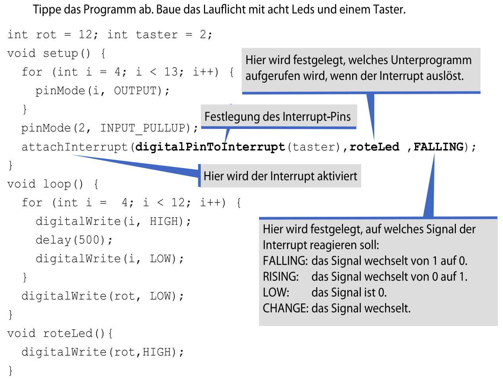
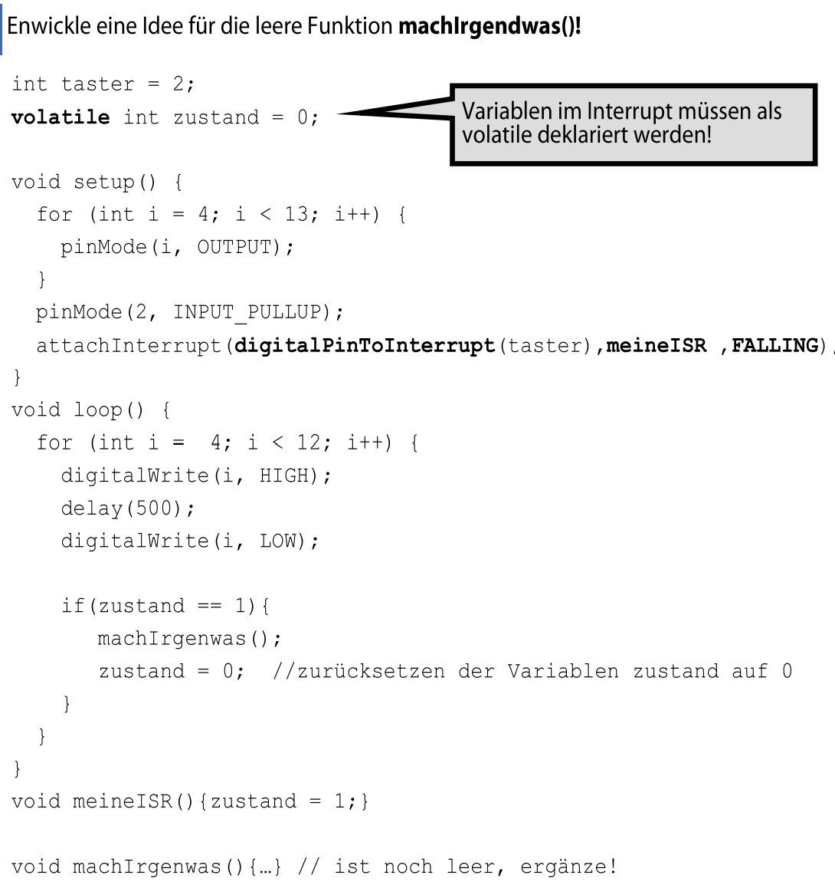
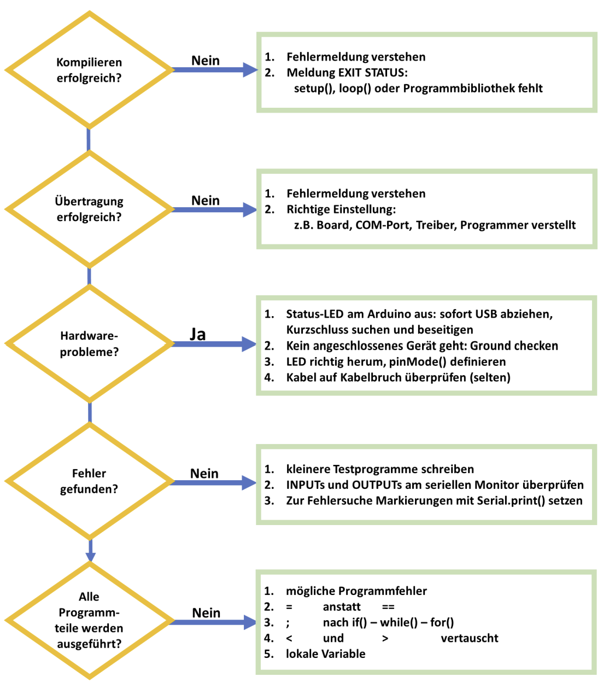

Auf dieser Lernseite arbeitest du an drei typischen Arduino-Themen: Listen mit vielen Werten, schnelle Reaktionen auf Taster und systematische Fehlersuche. Du liest, denkst nach, probierst aus und sicherst dein Wissen direkt mit Aufgaben auf der Seite.
Du lernst, wie du viele Werte in einer Liste speicherst und damit zum Beispiel Melodien oder Wortlisten verwaltest.
Du untersuchst, wie der Arduino auf kurze Signale sofort reagieren kann, auch wenn das Hauptprogramm beschäftigt ist.
Du baust dir einen klaren Prüfpfad auf, um Compiler-, Upload-, Hardware- und Logikfehler gezielt zu finden.
Jetzt lernst du, wie du Melodien, Notenwerte, Zeichen und Wörter als Listen speicherst. Du arbeitest Schritt für Schritt mit Tönen, Indizes, char-Arrays und vier passenden Übungsaufgaben.
Wie speicherst du viele zusammengehörige Werte so, dass dein Programm übersichtlich bleibt und du sie nacheinander verarbeiten kannst?
Du kannst Töne einzeln mit tone(Lautsprecherpin, Frequenz) ansprechen. Auf Dauer wird das aber unübersichtlich. Die Lösung sind Arrays: Listen, in denen mehrere Werte desselben Datentyps stehen.
Beim Deklarieren legst du Datentyp, Namen und oft auch die Länge fest. Die Länge steht in eckigen Klammern. Sind schon alle Werte eingetragen, kann man sie auch leer lassen. Jeder Listenplatz hat einen Index, und der beginnt immer bei 0.
Wenn du einer Variablen zum ersten Mal einen Wert zuweist, nennt man das Initialisieren. Genau so arbeitest du auch bei Arrays: Du legst zuerst fest, was gespeichert werden soll, und füllst die Liste dann mit Werten. Hier wird eine Melodie mit sechs Frequenzen gezeigt. Zusätzlich gibt es ein zweites Array mit Notenwerten wie Achtel, Viertel oder Halbe. So legst du nicht nur fest, welcher Ton gespielt wird, sondern auch wie lange.


int Melodie[] = {175,175,196,175,262,247};
int notenWert[] = {8,8,4,4,4,2};
int tonDauer;
int pauseZwischenNoten;
for (int i = 0; i < 6; i = i + 1) {
tone(8, Melodie[i]);
tonDauer = 1000 / notenWert[i];
delay(tonDauer);
noTone(8);
pauseZwischenNoten = tonDauer * 0.30;
delay(pauseZwischenNoten);
}Die Schleife läuft hier von i = 0 bis i < 6. So werden alle sechs Listenplätze nacheinander verarbeitet. Die Tondauer wird aus dem Notenwert berechnet. Eine Achtel dauert dadurch kürzer als eine Viertel oder Halbe.
Die Zählvariable i wählt in beiden Arrays immer denselben Platz aus. So passen Tonhöhe und Notenwert zusammen.
| Durchgang | i | Melodie[i] | notenWert[i] | Ergebnis |
|---|---|---|---|---|
| 1 | 0 | 175 | 8 | erster Ton, kurze Dauer |
| 2 | 1 | 175 | 8 | zweiter Ton, kurze Dauer |
| 3 | 2 | 196 | 4 | dritter Ton, längere Dauer |
| ... | ... | ... | ... | die Schleife arbeitet die Liste weiter ab |
| 7 | 6 | nicht vorhanden | nicht vorhanden | deshalb muss die Schleife bei sechs Elementen vorher stoppen |
Ein häufiger Fehler ist ein falscher Index. Wenn ein Array sechs Elemente hat, sind nur die Plätze 0 bis 5 gültig.


noTone()-Anweisung dazwischen.In Arrays müssen nicht nur Zahlen stehen. Mit char kannst du auch einzelne Zeichen speichern. Ein Beispiel ist char zeichen[] = {'P','f','e','r','d','1'};. Mit zeichen[3] würdest du das r ausgeben.
Ein einzelnes Zeichen wird im Speicher als Zahl abgelegt. Dafür gibt es eine feste Tabelle, die ASCII-Tabelle. Die Ziffer 1 als Zeichen hat deshalb einen anderen Sinn als die Zahl 1, mit der du rechnest. Genau darum ist es wichtig, ob du etwas als char oder als Zahl speicherst.
Willst du ganze Wörter speichern, reicht ein normales char-Array nicht mehr. Dann benutzt du einen Pointer mit Sternchen, also zum Beispiel char* mitSchueler[] = {"Martin","Volker","Frank",...};. Diese Zeichenketten stehen in doppelten Anführungszeichen.
char, wird sie als Text behandelt.char-Array stehen einzelne Zeichen in einfachen Anführungszeichen.* kannst du ganze Wörter speichern.werte[3] = analogRead(A0);.Tippe den Code ab, schließe einen Lautsprecher an und lass die Melodie spielen. Ergänze die restlichen Frequenzen und Notenwerte. Achte darauf: Die For-Schleife muss bis i < 25 laufen, sonst werden nur 6 Töne gespielt.
Diese zusätzlichen Werte brauchst du:
int melodie[] = {
196,196,220,196,262,247,196,196,220,196,
294,262,196,196,392,330,262,247,220,349,
349,330,262,294,262
};
int notenWert[] = {
8,8,4,4,4,2,8,8,4,4,
4,2,8,8,4,4,4,4,8,8,
4,4,4,4,2
};Fertige ein Array mit Namen deiner Klassenkameraden an. Schreibe dann ein Programm, das mit einer Zufallsfunktion über den Index einen Namen auswählt.
char* mitSchueler[] = {
"Martin","Volker","Frank","Kolja",
"Alexander","Mario","Peter","Rainer"
};Nutze den Satzanfang „Wer reitet so spät durch x und y?“. Lege Arrays mit möglichen Wörtern an und lasse per Zufall zwei Begriffe auswählen. Erfinde dann deinen eigenen Literaturautomaten.
Programmiere eine Maschine, die Hausdienste auf Familienmitglieder verteilt. Niemand darf doppelt eingesetzt werden. Auf dem Monitor könnte zum Beispiel stehen: „Papa darf abwaschen.“
Arrays machen Programme kürzer und klarer. Du kannst mit ihnen Melodien, Notenwerte, Zeichen oder ganze Wörter verwalten und später über Indizes oder Schleifen darauf zugreifen.
Jetzt lernst du, wie du Taster sicher abfragst und wie ein Interrupt dem Arduino hilft, auf ein Ereignis sofort zu reagieren. Dazu gehören Pull-Up, Pull-Down, Polling, attachInterrupt(), ISR und volatile.
Wie kann der Arduino einen Tastendruck sicher erkennen, auch wenn das Hauptprogramm gerade in einer Schleife oder in einem delay() steckt?
Auf dem Bild lernst du zuerst, wie du Taster elektrisch sauber abfragst. Dafür braucht man im Prinzip einen Spannungsteiler. Es gibt zwei Grundschaltungen: Pull-Up und Pull-Down.
Bei offenem Schalter liegt beim Pull-Up am Pin 5V an. Beim Pull-Down liegt am Pin 0V an. Vertauschst du GND und 5V, invertierst du also das Verhalten. Sehr praktisch ist INPUT_PULLUP: Dann nutzt der Arduino einen internen Pull-Up-Widerstand, und du brauchst nur Taster, Pin und GND. Einen internen Pull-Down gibt es hier nicht.
Wenn ein Programm Taster nur an bestimmten Stellen prüft, nennt man das Polling. In langen Schleifen oder bei delay() kann ein kurzer Tastendruck dann leicht verpasst werden.

Tippe das Programm von oben ab und baue ein Lauflicht mit acht LEDs und einem Taster. Der Interrupt reagiert auf den Tastendruck und schaltet eine rote LED ein. Dabei verstehst du, welche Funktion beim Interrupt aufgerufen wird und welches Signal ihn auslöst.

Ein Interrupt unterbricht das laufende Programm kurzzeitig, damit eine hinterlegte Funktion ausgeführt werden kann. So reagiert der Arduino sofort auf ein äußeres Ereignis, ein Zeitsignal oder eintreffende Daten.
attachInterrupt(digitalPinToInterrupt(taster),
roteLed,
FALLING);attachInterrupt() hat hier drei Teile: den Interrupt-Pin, den Namen der ISR und das Signal, auf das reagiert werden soll. Du siehst auf dem Bild die Varianten FALLING, RISING, LOW und CHANGE. Außerdem gilt hier: Nur an Pin 2 und 3 kann diese Interrupt-Funktion aufgerufen werden.
Der Interrupt erledigt nicht die ganze Arbeit. Er merkt nur schnell, dass etwas passiert ist. Die längere Reaktion gehört danach in loop().
| Moment | Programmzustand | Was passiert? | Warum ist das wichtig? |
|---|---|---|---|
| Vor dem Tastendruck | loop() läuft normal | Lauflicht oder anderer Code arbeitet weiter. | Das Hauptprogramm bleibt übersichtlich. |
| Taster fällt von HIGH auf LOW | Interrupt wird ausgelöst | Die ISR wird kurz aufgerufen. | Der Tastendruck wird nicht verpasst. |
| In der ISR | zustand = 1; | Nur ein Merker wird gesetzt. | Die ISR bleibt kurz und blockiert nichts. |
| Nach der ISR | loop() läuft weiter | loop() prüft den Merker und führt die längere Aktion aus. | Anzeige, Ton oder Bewegung passieren kontrolliert im Hauptprogramm. |
Tippe auch den oberen Code ab und ergänze die leere Funktion machIrgendwas(). Die ISR setzt nur zustand = 1;. Erst in loop() wird geprüft, ob der Zustand gesetzt wurde, dann wird die eigentliche Funktion gestartet und der Zustand wieder auf 0 zurückgesetzt.
Interrupts lösen das Polling-Problem bei kurzen Signalen. Die ISR bleibt kurz, merkt sich nur das Ereignis, und Variablen aus der ISR müssen als volatile markiert werden.
Jetzt lernst du, wie du Fehler systematisch findest: erst kompilieren, dann die Übertragung prüfen, dann Hardware und Programmlogik untersuchen.
Fehler sind beim Programmieren normal. Entscheidend ist nicht, ob ein Fehler auftritt, sondern wie du ihn suchst. Das Bild zeigt dir dafür einen klaren Prüfpfad.

Wenn nicht, musst du zuerst die Fehlermeldung verstehen. Achte dabei auf EXIT STATUS, fehlendes setup(), fehlendes loop() oder eine fehlende Programmbibliothek.
Wenn das Hochladen scheitert, prüfe die Einstellungen: Board, COM-Port, Treiber und ob eventuell der Programmer verstellt ist. Wichtig ist außerdem die richtige Programmer-Einstellung: AVRISP mkII.
pinMode() definieren.Serial.print() Markierungen setzen, um den Ablauf sichtbar zu machen.= statt ==if(), while() oder for()< und > vertauschtwhile-Schleife kannst du zum Testen zum Beispiel Serial.print("Jetzt bin ich in der While-Schleife"); einsetzen.// typischer Debug-Helfer
if (sensorWert > 500) {
Serial.println("Zweig A");
} else {
Serial.println("Zweig B");
}Solche Markierungen helfen dir, den tatsächlichen Programmablauf zu sehen, statt nur zu raten.
Gute Fehlersuche folgt einer Reihenfolge: Kompilieren, Übertragen, Hardware, Testprogramme, typische Syntax- und Logikfehler. So suchst du zielgerichtet statt zufällig.
Serial.print() mehr als bloßes Raten?